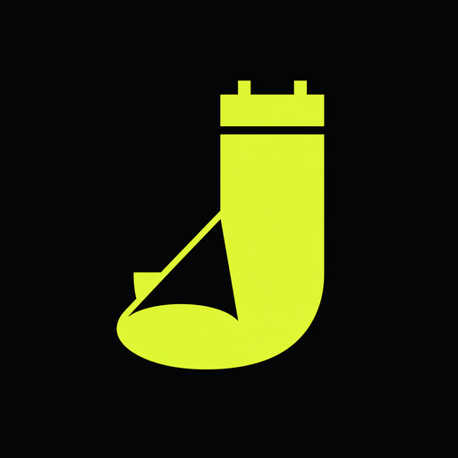

J-POP LIVE IN KOREA
J-POP
H△G
2026년 10월 17일(토) · WESTBRIDGECONCERT DATES
확인된 공연 일정
현재 공식 확인된 한국 공연은 1회입니다. 추가 회차나 운영 변경은 연결된 공식 출처에서 다시 확인합니다.
TICKET ANALYSIS
공연별 실제 예매 분석
공식 예매처 기준 · 마지막 확인 2026-09-23
- 좌석 등급과 가격
- VIP section 132,000원 · General section 99,000원
ARTIST
아티스트 소개
H△G의 한국 공연입니다. 공식 발표와 예매처 정보를 기준으로 일정을 정리했습니다.
H△G 아티스트 페이지 →VENUE GUIDE
공연장 교통 안내
WESTBRIDGE 방문 전 공식 공연장 안내에서 대중교통, 주차와 입장 게이트를 확인하세요.
교통편과 출입구는 당일 운영 상황에 따라 달라질 수 있습니다. 출발 전 주최사와 공연장 공지를 다시 확인하세요.
DAY PLAN
공연 당일 체크리스트
- 2026년 10월 17일(토) · WESTBRIDGE의 입장구와 집합 시각은 당일 공식 공지를 확인하세요.
- 공연별 본인 확인·티켓 수령 조건은 위 예매 분석과 공식 예매처 안내가 최종 기준입니다.
- 최신 판매 상태와 관람 조건은 공식 예매처에서 다시 확인하세요. 예매 페이지의 최신 공지가 이 상세 기록보다 우선합니다. 공연 직전에는 날짜, 시작 시각, 입장 번호, 수령 장소와 재입장 가능 여부도 함께 확인하세요.
POPULAR TRACKS
입문용 추천곡 3개
H△G의 공식 YouTube 채널에서 최근 대표곡과 라이브 영상을 확인하세요.
SOURCES
공식 출처와 검증 기록
일정 확인 2026-09-23 · 가격 확인 2026-09-23 · 판매 상태 확인 미확인 · 글 수정 2026-09-23